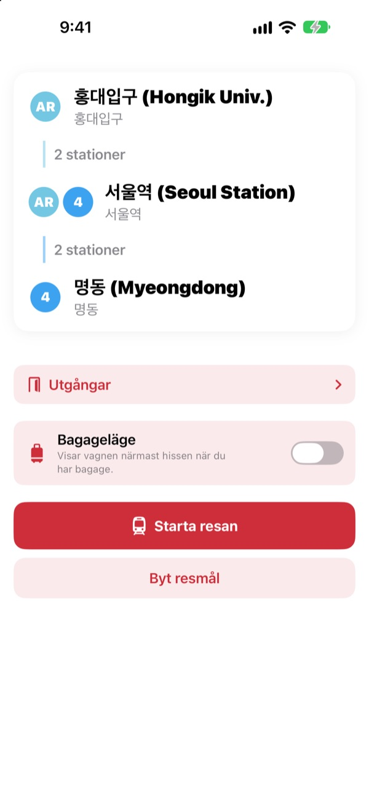
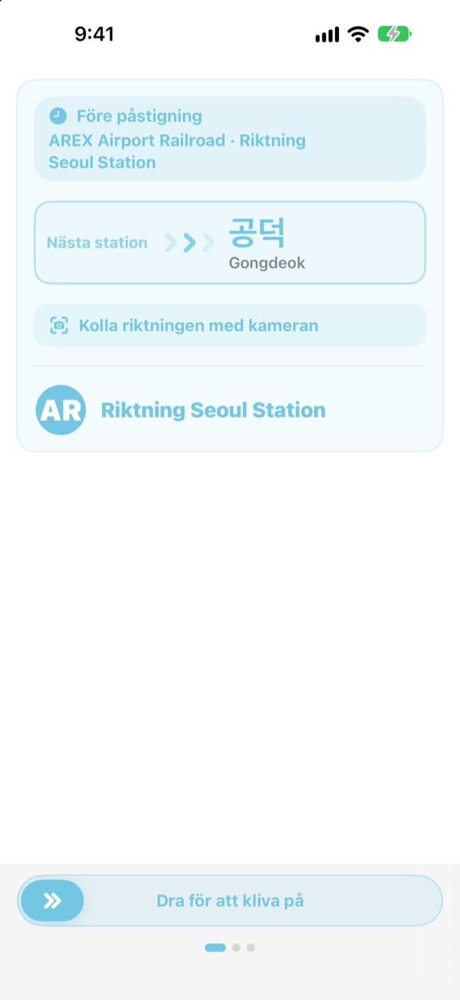
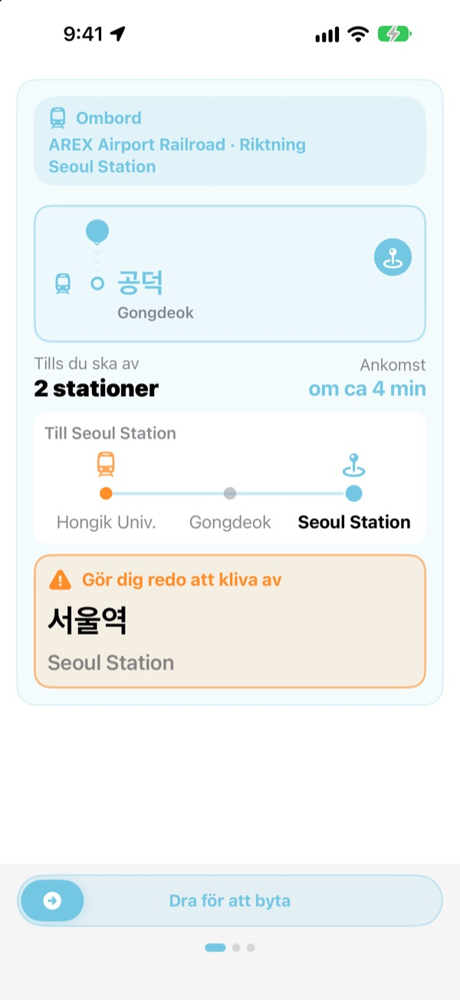
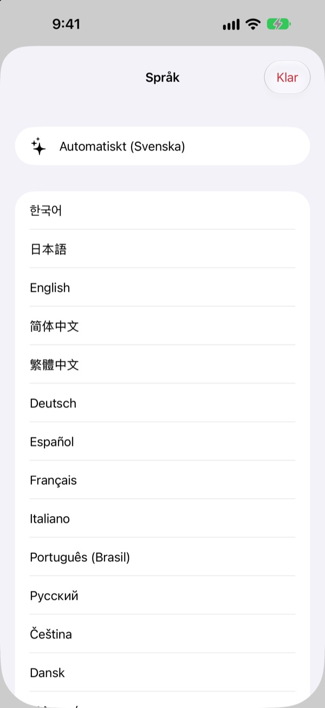

Rätt plattform.
Rätt station.
Välj start och mål så talar KORA om vilket tåg du ska ta, skrivet precis som på skylten på plattformen. Under resan följer den din station och säger till när du ska kliva av.
Ruttsökning, färdriktning och ankomster i realtid är gratis.

Ta en provtur
Du står på Hongik Univ. på AREX-linjen. Välj var du ska av och tryck på Starta resan för att se tågets riktning och aviseringarna om att kliva av, precis som i appen.
Har du stått på plattformen utan att veta vilket tåg du ska ta?
Kartappar visar linjen, men på plattformen finns bara skyltar med namn på stationer du aldrig hört talas om. Tar du fel håll får du åka tillbaka flera stationer. Missar du utropet åker du förbi. KORA kallar ditt tåg samma sak som skylten och varnar dig före din station.
Med skyltens egna ord
Tåget du ska ta visas precis som destinationen står på plattformen och på tåget. Osäker? Rikta kameran mot skylten på plattformen eller tågets destinationsskylt så säger KORA direkt om det är rätt håll.
Texten känns igen helt på din iPhone.

Åk aldrig förbi igen
KORA kombinerar ankomster i realtid, GPS, tågets avgångar och stopp och utropen ombord för att veta var du är. När din station närmar sig får du ”Gör dig redo att kliva av” och sedan ”Kliv av nu!” med vibration.
Resans förlopp syns också på låsskärmen och i Dynamic Island.

23 språk, koreanska namn kvar
Använd hela appen på 23 språk. Den startar på din iPhones språk. Stationsnamn visas på koreanska bredvid den latinska stavningen från skyltarna, så du känner igen dem på plattformen.

Kom igång i tre steg
- 1
Välj start
GPS hittar närmaste station, eller välj själv.
- 2
Välj mål
Byten, stationer och rätt tåg visas direkt.
- 3
Tryck på Starta resan
Skärmen och en vibration säger till när du ska av.
Vad behörigheterna används till
- Plats
- Hitta närmaste station
- Kamera
- Läsa skyltar och destinationsskyltar för att kolla riktningen
- Mikrofon och taligenkänning
- Uppfatta stationsnamn och dörrsida i utropen ombord
- Rörelse och träning
- Känna av avgångar och stopp så att aktuell station blir mer exakt
Alla behörigheter är frivilliga. Utan dem väljer du stationer själv och får ändå rutt och aviseringar om att kliva av. Plats, kamera och utrop behandlas på enheten och spelas aldrig in, sparas eller skickas.
Att hitta vägen är alltid gratis. Guidning ombord är KORA Pro.
Gratis
- Ruttsökning och byten
- Destinationsskylten på tåget du ska ta
- Ankomster i realtid
- Riktningskoll med kameran
- Aktuell station och avisering om att kliva av på skärmen
- Alla Pro-funktioner på dina tre första resor
KORA Pro
- På varje resa: guidning på låsskärmen, igenkänning av utrop och vibration när du ska av
- Utgångar: vad som finns vid varje utgång på Seouls linje 1 till 8
- Påminnelse om sista tåget på linje 1 till 9
- Bagageläge: vagnen närmast hissen på linje 1 till 8
Betala en gång och behåll det. Ingen prenumeration.
När de gratis resorna är slut kan du fortfarande åka. Förloppet på skärmen finns kvar; bara låsskärmen, igenkänningen av utrop och vibrationen pausar.
Vanliga frågor
Appen hittar inte min station eller visar fel.
Gå till Inställningar > Integritet och säkerhet > Platstjänster > KORA, välj ”När appen används” och slå på ”Exakt plats”. Under jord eller i stora byggnader kan GPS slå fel: tryck på kortet med aktuell station högst upp och välj själv. Allt fungerar även utan platsåtkomst.
Hur använder jag riktningskollen med kameran?
När rutten visas öppnar du riktningskollen och fyller bilden med skylten på plattformen eller tågets destinationsskylt. Det fungerar bäst med den koreanska texten. Är skylten mörk, långt bort eller väldigt sned, gå närmare och sikta rakt mot den. Resultatet är ett stöd, så titta också på stationens skyltar om du är osäker.
Ankomster i realtid visas inte.
Datan kommer från Seoul Open Data Plaza, kräver internet och finns främst för linjer i Seoulområdet. Utan uppkoppling eller realtidsdata går KORA automatiskt över till en uppskattning från tidtabell, GPS och accelerometer och fortsätter guida dig. Ruttsökning fungerar offline.
Aviseringen om att kliva av kom lite tidigt eller sent.
Under jord är GPS svag, så aktuell station kan släpa efter. Ger du åtkomst till mikrofonen rättar KORA positionen efter utropen ombord. Aviseringarna är ett stöd, så lyssna även på utropen och håll koll på skyltarna.
Hur byter jag språk?
KORA startar på din iPhones språk. Tryck och håll på ett stationskort på huvudskärmen (aktuell station eller mål) för att öppna valet mellan 23 språk.
Live Activity syns inte på låsskärmen.
Kontrollera under Inställningar > Appar > KORA (på äldre iOS Inställningar > KORA) att Live Activities är på. Den dyker upp när du startar guidningen för resan och avslutas om du stänger appen helt. Dynamic Island finns bara på iPhone-modeller som har den.
Vilka städer finns med?
Runt 930 stationer i Seoulområdet (Seoul, Gyeonggi och Incheon, inklusive GTX-A, AREX, Shinbundang-linjen och lättbanor), Busan, Daegu, Gwangju och Daejeon. Byt stad med regionknapparna högst upp i stationsvalet.
Kan jag testa före resan?
Ja. Välj start och mål själv så kan du se rutter, byten och färdriktning var du än är i världen.
Är KORA Pro en prenumeration?
Nej. Det är ett engångsköp som du behåller, och det fungerar med Familjedelning. Installerar du om appen trycker du på Återställ köp på Pro-skärmen.
Vad händer med mina data?
Inget konto och ingen reklam. Plats, kamera och igenkänning av utrop behandlas på enheten och sparas eller skickas aldrig. Vi samlar bara in anonym användningsstatistik för att förbättra appen.
Är appen tillgänglig?
KORA har stöd för VoiceOver och större text. Förslag på bättre tillgänglighet är alltid välkomna.
Saknas en station, ser ett namn konstigt ut eller har du en annan fråga? Skriv till mizzking75@gmail.com. Ange gärna appversion, iPhone-modell och vilka stationer du använde, så kan vi hjälpa snabbare.